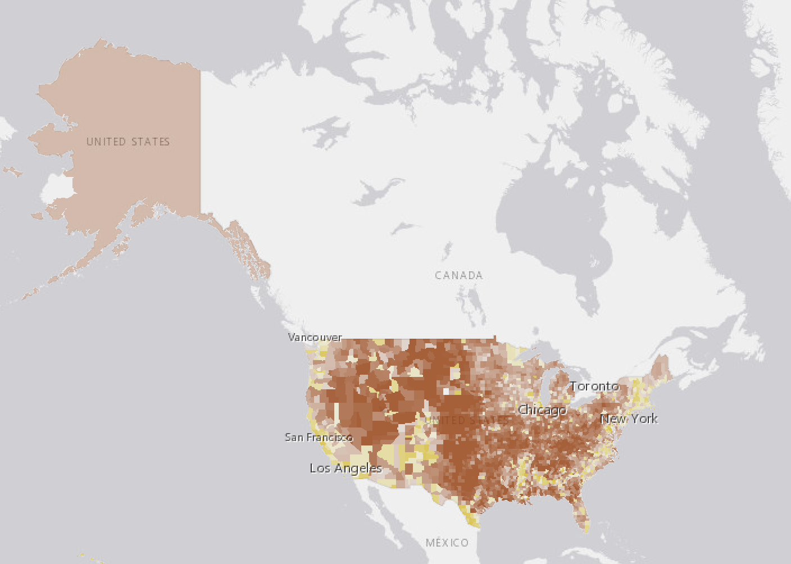
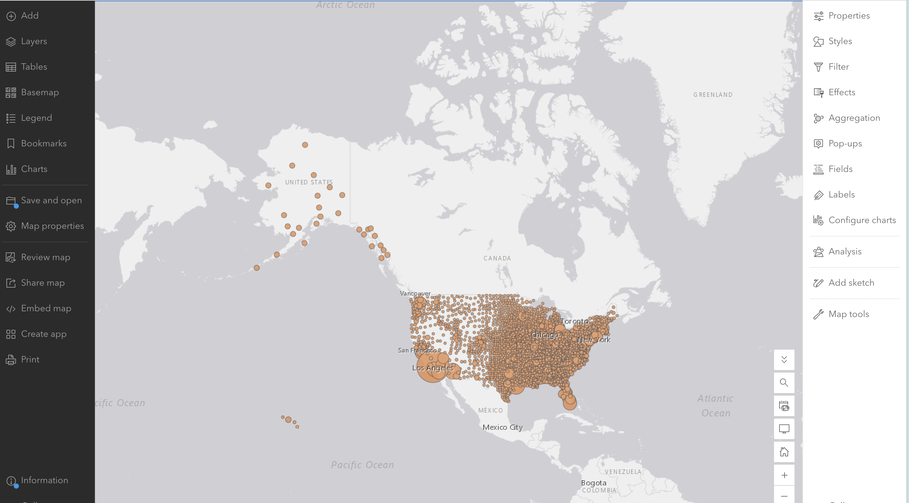
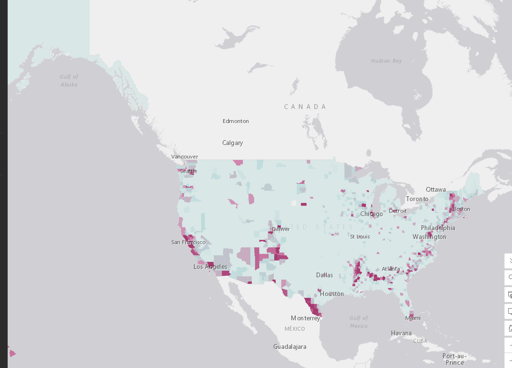
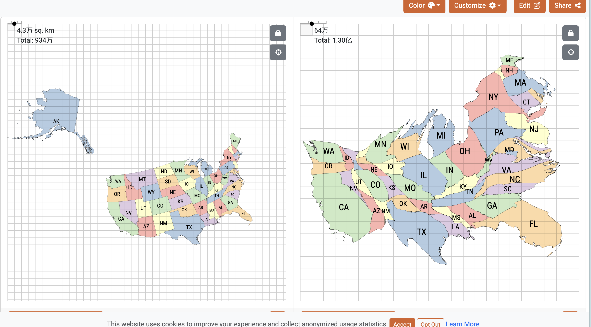

Lab 02 · September 2026
Map 2 the Presidential Election 2016 map
The question：
Where was Democratic support concentrated or dispersed in the 2016 US presidential election?
The data
The data comes from Esri's public teaching layer Presidential Election 2016, published under the account Teach_with_GIS, with 3,139 county-level records.
Auditing the table revealed three undisclosed defects:
(1) the DEM_votes field is empty in every row — the field with actual data is votes_DEM;
(2) the legend aliases DEM_per and GOP_per as "%", but the stored values are proportions (0–1), not percentages;
(3) all 28 Alaska borough rows carry the identical statewide totals (93,003 DEM votes, 130,413 GOP votes), so summing over rows counts Alaska 28 times.
Even after correcting the Alaska duplication, national vote totals (approx. DEM 62.5M / GOP 61.2M) fall several million short of the certified result (DEM 65,853,514 / GOP 62,984,828), for reasons this lab could not diagnose from inside the file. This is reported, not corrected.
The method
Each of the four maps encodes the same underlying data on a different visual channel:
(1) Predominant category uses hue to show which of DEM_per or GOP_per is larger for each county, with transparency showing the margin;
(2) Graduated symbol uses circle size to encode Total_Votes, with a transparent fill applied to mitigate occlusion in dense areas;
(3) Standardised score uses a custom Arcade expression standardising DEM_per into a z-score (z = (value − mean) / sd, mean ≈ 0.3174, sd ≈ 0.1527, computed across all 3,139 counties with no filter applied), verified against three known values — New York County (+3.63), Los Angeles County (+2.60), King County, TX (−1.87) — and styled with a diverging ramp (Above and below theme);
(4) Cartogram, built in go-cart.io at the state level, with area set to Votes_total and colour set to Pct_DEM (quintiles); the supplied CSV corrects the Alaska duplication back to a single statewide figure but leaves the reconciliation gap against the certified result untouched. The published classification scheme (from the Part 4 sensitivity check) is Natural breaks with 5 classes. The z-score constants are relative to the national county average, not any filtered subset.




8.1 The comparison
| Map | Visual channel | What it makes easy to see | What it hides or distorts |
|---|---|---|---|
| 1 · Predominant category | Hue | Nearly the whole country appears in a single colour, making it immediately clear that Republicans won an overwhelming majority of counties. | It shows no gradation of margin, and third-party voters are entirely absent; sparsely populated counties occupy far more visual weight than their population warrants. |
| 2 · Graduated symbol | Size | Dense metro areas (New York, Los Angeles, San Francisco) stand out clearly with their vote-count magnitude; sparsely populated counties no longer dominate the view by land area the way they do in a choropleth. | The New York close-up shows several circles overlapping (Manhattan, Brooklyn, Queens and neighbouring counties nearly stacked together), making individual county values hard to distinguish; the occlusion occurs precisely where the data is densest and most interesting — a structural cost of this visual channel, not bad luck. |
| 3 · Standardised score | Value (lightness) | It clearly shows which regions deviate most from the national average county — coastal and urban areas read very differently from the interior, with extreme deviations immediately visible. | The pale midpoint (z near 0) reads as neutral, but it actually represents a county with only about 32% Democratic support — easily misread by a reader as a "balanced" or "ordinary" position. |
| 4 · Cartogram | Area | It reallocates each state's visual area by true vote weight — populous, high-turnout states (California, New York, Texas) swell visibly while smaller states shrink, closer to the intuition that every vote counts equally. | Geographic shape is heavily distorted, making individual states hard to recognise by outline alone; real distance and direction are lost entirely. |
A campaign would likely choose whichever map favours its own coalition — a party that wins on geography would favour Map 1, since a choropleth makes "owning more land" look like a commanding lead; a party whose support concentrates in cities would favour Map 2 or Map 4, which better reflect true population/vote weight. As the analyst, I would publish Map 4 (Cartogram) together with the full disclosure below, because it most directly encodes how much each vote weighs into visual area, rather than letting sparsely populated, land-heavy regions shout louder than their actual weight. This is defensible rather than merely convenient: it directly answers the core problem diagnosed in Part 2 — that a choropleth gives area a voice disproportionate to population — rather than being chosen simply because it looks compelling.
8.2 The disclosure block
| Report | Yours |
|---|---|
| The scheme, named | Natural breaks, 5 classes. |
| The class count, and why that count | 5 classes. This count was held constant across all three schemes in the Part 4 sensitivity check, balancing enough detail against legend clutter and enabling a fair side-by-side comparison. |
| One alternative scheme, mapped, and what changed | Compared with Equal interval (breaks at 0.21 / 0.39 / 0.569 / 0.749): Natural breaks (0.206 / 0.314 / 0.438 / 0.596) puts noticeably more counties in the top class (>0.596) than equal interval's top class (>0.749), because natural breaks follows the actual clustering in the data rather than mechanically dividing the range. |
| The claim you would still make if the scheme changed | Regardless of the classification scheme used, the core contrast — Republicans won about 84% of counties, yet the two parties' national vote totals were nearly level — holds unchanged, because it comes from the Part 2 county-count-vs-vote-sum comparison, not from any choice made in Part 4's classification. |
What I found
The most significant finding came from Part 2: the Republican candidate won about 84% of counties (2,555 vs. 408), while the two parties' national vote totals were nearly level (about 65.0M vs. 64.7M; the gap widens to roughly 62.5M vs. 61.2M once the Alaska duplication is corrected). Both facts come from the same 3,139-row table, but Map 1 (a choropleth) can only show the county count. Separately, the three classification schemes in Part 4 (equal interval / quantile / natural breaks) produced entirely different breaks and top-class county counts from the same DEM_per column — showing that the argument "support was broad vs. concentrated" depends heavily on the classification method chosen, not on any change in the underlying data. The New York close-up in Map 2 further confirms Thursday's point: the proportional symbol escapes the choropleth's area problem but buys an occlusion problem — and the occlusion is worst exactly where the data is densest and most worth looking at.
What this does not show
None of the four maps shows third-party voters — in 78 counties they exceed a tenth of the vote, yet DEM_per and GOP_per do not sum to 1, and the missing share is not drawn in any form on Map 1. Non-voters (unregistered or non-participating residents) are likewise entirely outside the scope of this dataset. See the AI-usage disclosure below regarding AI assistance used in drafting this entry and formatting the HTML.